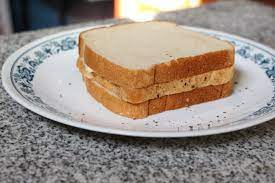

Toast Sandwich
Description
Pinnacle of haute cuisine, the French will try to say they didn't invent it but they 100% did,

Ingredients
- 1 slice of bread
- Another slice of bread
- A final slice of bread
- Mystery amount of butter if you're feeling fancy
Steps
- Look in your cupboard and realise you only have half a loaf of bread in and no other food
- Apply butter to two of the slices of bread.
- Place the remaining slice in a toaster, walk around, forget its in the toaster, and get back just in time to pop it up before it's cremated
- Put the toasted bread in between the untoasted slices, and garnish to serve.